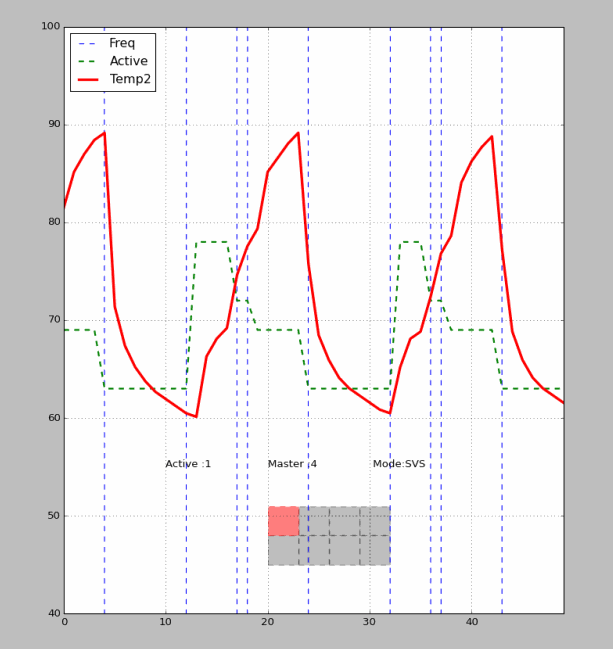

APPS Thermal Profiling Framework
This project was developed for Qualcomm, source code cannot be shared
Vulcan is Bare-Metal OctaCore platform to run Thermal Mitigation Algorithms. The team I work for works without any an OS( Android ) in most of the cases, the motivation behind this project was to evaluate the hardware without any other system imposed on top of it.
The features provided are :
Multi-Core Hotplugging
DCVS per Cluster
RealTime Visualization
High Frequency Logging
xml based Throttling Algorithm syntax and parsing
Offline comparative analysis of Algorithms
Multi-Sensor StateMachines for Throttling Algorithms
QBlizzard is the only benchmark supported
Virtual corners support
Thermal mitigation algorithms can influence the system either by taking cores offline or by cutting down on the Voltage/Frequency of the systems' operation. This demonstration tries to showcase the effect of manipulating these knobs on the systems' overall temperature.
The temperature profile was captured in real time from the chip on which the algorithm was being exercised

Details on the representation above :
Cores in Green are online, while the ones in Grey are offline and the one in Red is the Master Core which handles this system.
Green Dashed Line : is representative of the number of cores online at any given point in time
Red Line : is the Temperature of this system in *C
Blue Dashed Line : is the representative of the instant when Frequency of the system was changed